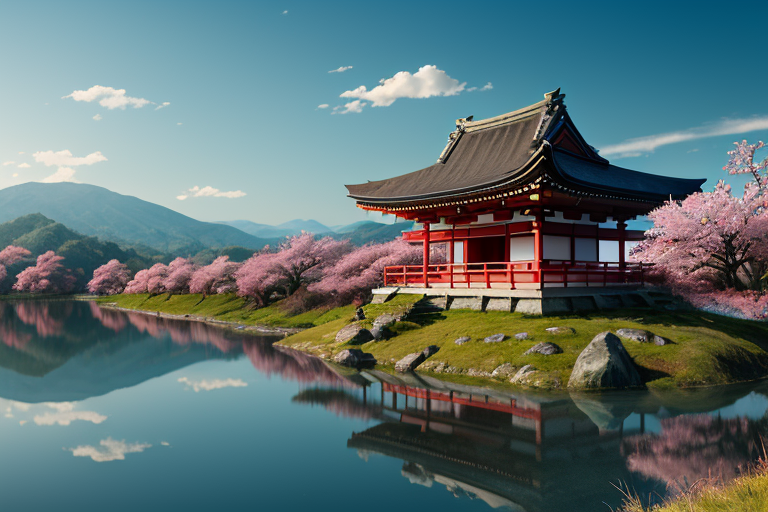
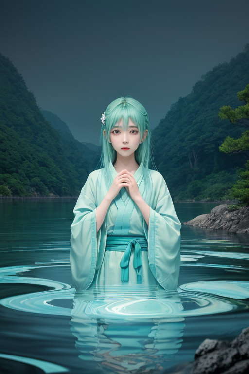
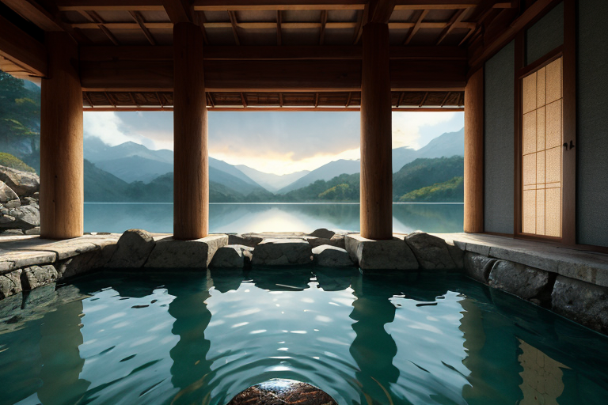
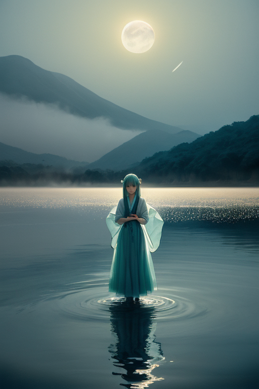
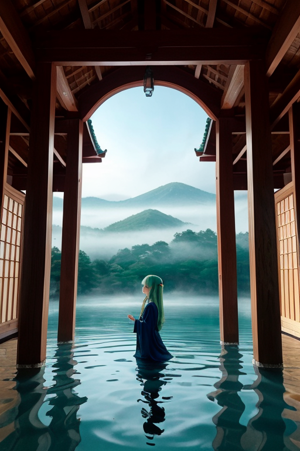

第一章 現実の滋賀
あなたはまだ気づいていない。この土地にも、王がいることを。
琵琶湖の水面は、今日も穏やかに光っている。比叡山延暦寺の杉並木を抜ける風は、千二百年の祈りを運ぶように静かだ。しかし、この平穏は絶対ではない。地図には記されない歪みが、湖底の深く、山塊の根で、絶えず蓄積されている。それは物理的なひずみだけではない。この地に積もった膨大な記憶、比叡山の仏教文化が日本に広げた思想的波紋、近江商人が全国に張り巡らせた経済と信頼の網の目。それらすべてが、目に見えない重さとして土地を押し、時に微かな軋みを生む。
湖王オウミリア・メモリアは、そのすべてを知っている。彼は湖面に立つ。正確には、水と大気の境界、記憶が沈殿し、また蒸発していくその狭間に。彼の目には、現在の琵琶湖と、そこに重なる無数の過去の湖面が同時に映る。流れるか、留まるか。彼の王国の根源的な問いは、風景そのものに織り込まれていた。

第二章 歪みの兆候
比叡山延暦寺の杉並木を、観光バスの排気ガスがゆっくりと汚していく。湖王オウミリア・メモリアは、その微かな化学的な澱みを、皮膚で感じ取った。これは新しい歪みではない。近江商人が全国に信楽焼や近江麻布を運んだ頃から、この地は「流通」という名の圧力に晒され続けてきた。物資が流れ、金が流れ、人が流れる。そのすべてが、湖が千年かけて蓄えた記憶の層を、目に見えない力で押しつぶそうとしている。
今日の微調整は、大津市街地の直下で蠢く岩盤の軋みを、ほんの少し和らげるものだった。王が手のひらをかざすと、妖精ビワリアが湖底から舞い上がり、清冽な感情の粒子を軋みのポイントへと運んでいく。しかし、王の眉には曇りが差した。処理される感情の沈殿物に、近年、焦燥と忘却の棘が混じるようになっていた。人々が急ぎ、過去を置き去りにするスピードが、土地そのものの記憶を傷つけ始めている。湖面に映る彦根城の姿が、かすかに揺らぐ。留まるべき記憶が、流されようとしている兆候だった。

第三章 王の葛藤
比叡山延暦寺の根本中堂に灯る、千二百年消えたことのない不滅の法灯が、微かに揺れた。その揺れは、山肌を伝い、地中を流れ、琵琶湖の水脈に達する。オウミリア・メモリアは、湖底の沈殿層でその震動を感知した。焦燥と忘却の棘は、比叡山が育んだ「和の精神」、近江商人が礎とした「三方よし」の記憶を浸食し始めていた。留めるべきか。流すべきか。
王は静かに目を閉じた。掌に浮かぶ紋章が、青から深い藍へと色を変える。処理を止めれば、軋みは増大し、小さな地割れや水脈の乱れが生じるだろう。しかし、人々の急ぎ、変革の波は、土地が新たな記憶を積層するための必然でもあった。信楽焼の土が窯の中で変容するように、記憶もまた、焼き固められるだけでは脆くなる。
「流すのですか」と、主席妖精メモリアルが囁いた。その優しい声には、郷愁に満ちた不安が滲む。王は頷いた。指先から、湖円の紋章が拡がり、波紋のように軋みのポイントを包み込む。しかし、今回は「緩和」ではなく「選別」だ。忘却の棘だけを優しく濾し取り、変革の熱そのものは、新たな沈殿物として湖底に降ろしていく。痛みを伴う決断だった。彼が初めて、郷愁という感情に抗った瞬間である。

第四章 妖精との対話
「王様、それは……『忘れさせる』ことになります。」
メモリアルの声は、琵琶湖の夜の水面のように揺らいでいた。彼女の手には、濾し取られた忘却の棘が、微かな青い光を放っている。
「この軋みは、人々の『あの時、ああすれば』という後悔の念。留めれば、確かに痛みは残る。でも、流せば、その痛みから学ぶ機会も失われる。」
王は、比叡山の山影を背に、黙って聞いていた。近江商人の町並みが、変革の熱気に包まれる気配を、肌で感じている。
「わかっている。」王は言った。「だが、この軋みは、過去に縛り付けるための錨だ。錨が重すぎれば、船は次の港へ向かえない。流すのではなく……選び、沈殿させる。後悔の棘は浄化し、変革の熱は新たな層として湖底に刻む。それが、我が王国の『記憶』の在り方だ。」
メモリアルは深く息を吸った。彼女の役割は感情の沈殿処理。流すべきか、留めるべきか、その判断の重みを、彼女は誰よりも知っていた。
「では、私が浄化を担当します。ビワリアと共に、この棘を……優しく溶かしましょう。」

第五章 微調整と余韻
比叡山延暦寺の根本中堂に、消え入りそうな灯りが一つ揺れていた。オウミリア・メモリアはその前で、ただ立っていた。彼の手には、一滴の「水」が浮かんでいる。それは、この地に積もった膨大な「記憶」の沈殿から抽出された、一点の「後悔」の結晶だった。比叡山焼き討ち。その惨劇の瞬間、ほんの一握りの僧侶と経典を、わずかな時間差で裏山へ逃がすことができた。彼が行った、歴史に対する唯一の、最大の「微調整」である。
代償は大きかった。その調整の「歪み」を一身に受け、彼の「湖」は長きにわたり濁った。感情の沈殿処理を担うメモリアルとビワリアは、その濁りを浄化するために、数百年の時を要した。
今、彼はその「後悔」の結晶を見つめる。流すべきか、留めるべきか。彼はそっと手を握りしめた。結晶は砕け、青い光の粒子となって、彼の体内に還っていく。流すのではない。自らの層の一部として、留めるのだ。痛みも、儚さも、全てがこの湖の深みを形作る。歴史は動いた。その激動の裏側で、ほんの少しの命の灯りが繋がれた。それで十分だった。
琵琶湖の水面に、新しい波紋が、静かに広がっていく。
あなたの町にも、王がいる。